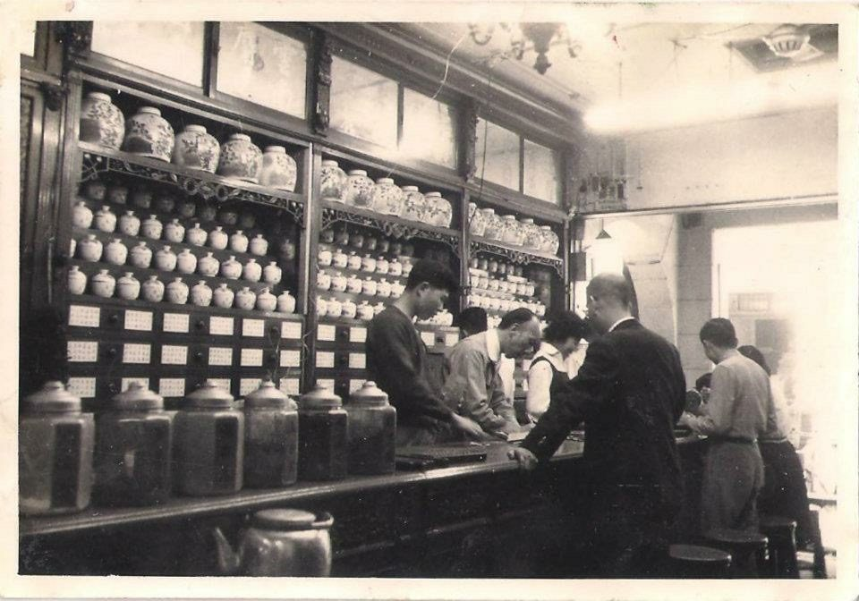
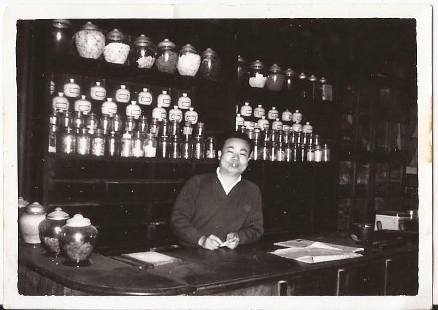
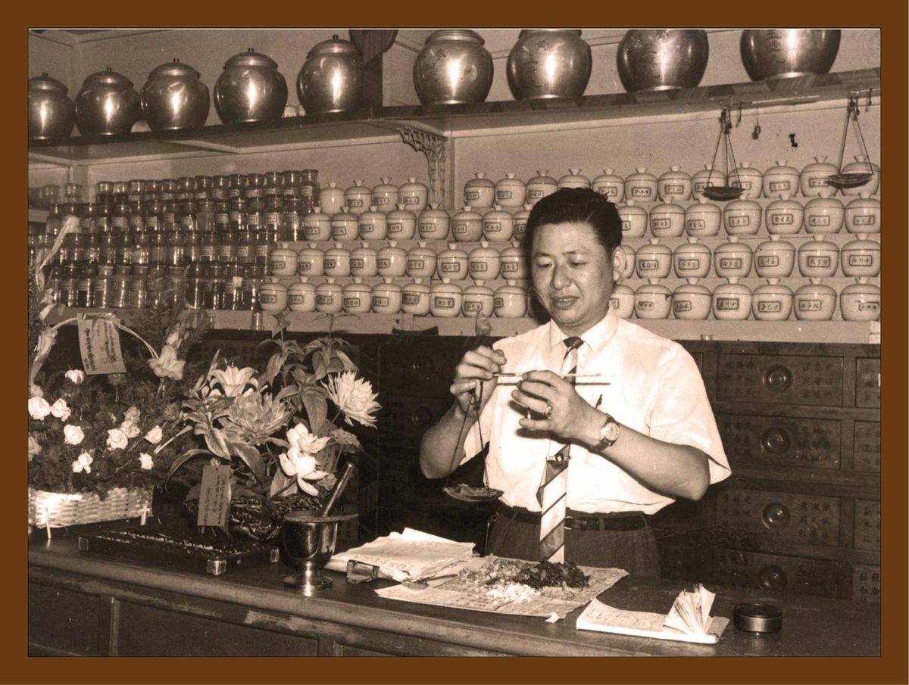

⭐中藥行尋寶──百子櫃⭐

在探訪中藥行時，常是先嗅到陣陣藥香，接著映入眼簾的就是櫃台後面高大厚實、黝黑發亮的多抽木櫃，其名為「百子櫃」。
百子櫃打哪來？
其由來多託給了刮骨不留情，開腦急先鋒的醫家大聖華陀(一說為藥王孫思邈)。
話說有天華陀醫治了某位技能點極高的木匠，康復後木匠旋即上門感謝華陀大大，甫進門就看見藥材一袋袋丟在大堂各處，有強迫症的他，將眼光轉向正在研究藥材的華陀，顫抖的手指向各處的袋子，緩緩道：「先生，我可以幫忙整理嗎？」
華陀專心於醫藥的小世界中，只敷衍地點了點頭，木匠就砰一聲，失去了蹤影。幾日過去，木匠和幾位夥計拿了個多抽木櫃前來，放置華陀家大堂，望向華陀，眼中充滿期待。
華陀見狀大驚說道：「我沒有訂這個商品阿，我不會付錢跟運費喔！」木匠趕緊說明：「今日免運，歐不，先生你忘了我嗎？前幾日我生重病得先生醫治，身體才痊癒，這個多抽木櫃，高雅大方，用頂級木材所製，蟲潮不侵，若妥善使用保證百年不壞，可將大堂中百味藥材放置其中，一來不懼腐壞，二來整齊乾淨，豈不剛好，我將它送給先生，希望先生能收下。」
百子櫃就在免運加免費的情況下，出現在中藥的歷史之中，更成為了藥行必備的利器。
百子~百子~百子千孫
時至今日，百子櫃從一抽可裝四味藥材，演變到一抽可裝十六味藥材，說明多代醫者對百草的了解倍增，亦增加了後世抓藥的難度。現今有些藥行會將較具代表性的兩三個藥名寫在抽屜外板，而有些卻是甚麼也不寫，標示著抓藥師傅超人的記憶力，在老闆我查訪的藥行中就有幾間如此。
若人客仔細觀看，就可看出抓藥人將常用的藥材，集中放在順手可取的幾個抽屜，多方記錄歸納後，可知此地百姓常生之疾病為何，師傅就在這一拉一推與話語來往之間，撫慰著地方人民的身心傷痛。
而此櫃名為百子，並非指其中藥材裝了百種，而是取服用中藥可使身體康健，家族得衍百子千孫之意，看得出華人特重血脈延續的文化寓意。
百年藥行中佇立的黑亮百子櫃，彷若棵老樹抓緊藥行的血脈，繁開枝葉蔽蔭地方幾世代人的健康與記憶，我們寫作這本百年藥行記錄，亦是想將百子櫃的所見所聞，留下點斑駁光影，讓後人能想望那曾以中藥行為生活中心的情味時光。
百年藥櫃九帖湯各大平台書局熱銷中
博客來：
讀冊：
金石堂：
附圖感謝上乾元蔘藥行、廣生藥房、張濟生中藥行提供

